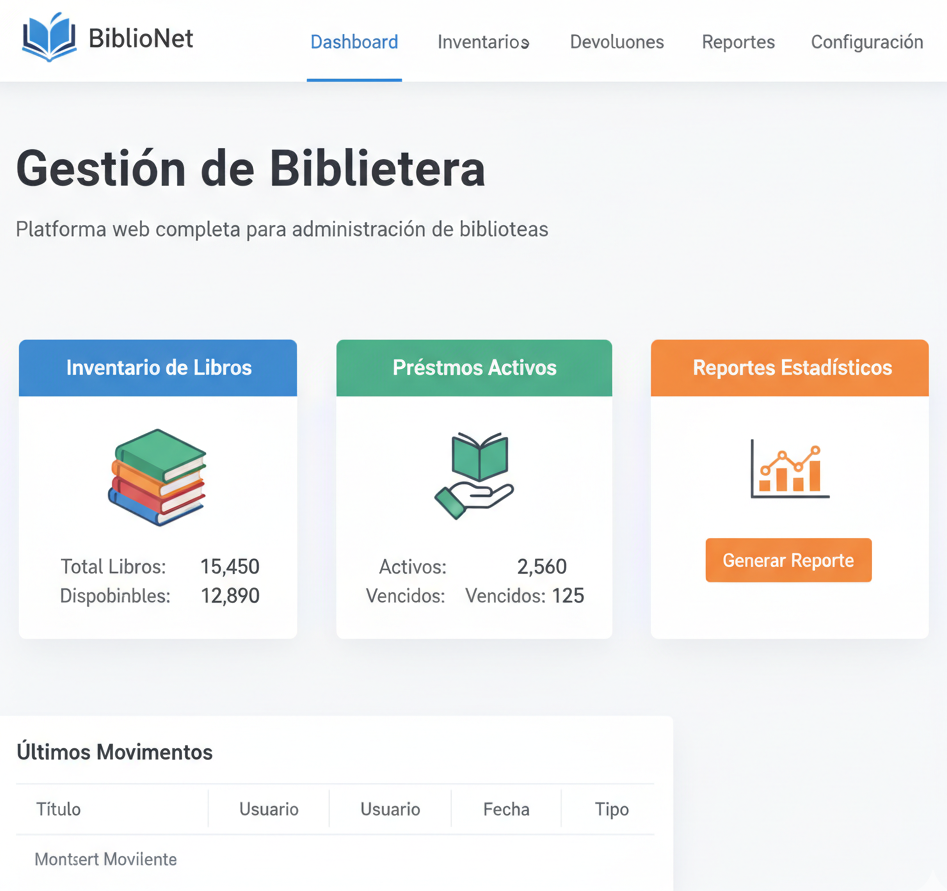

Gestión de Biblioteca
Plataforma web completa para administración de bibliotecas. Permite gestionar inventario de libros, registrar préstamos, controlar devoluciones y generar reportes estadísticos automatizados.
Desarrollé esta solución pensando en hacer más accesible la gestión bibliotecaria, especialmente para instituciones educativas o comunitarias que necesitan organizar sus recursos de manera simple pero efectiva. La interfaz está diseñada para ser intuitiva, permitiendo que cualquier persona pueda usarla sin necesidad de capacitación extensa.
Ver más
